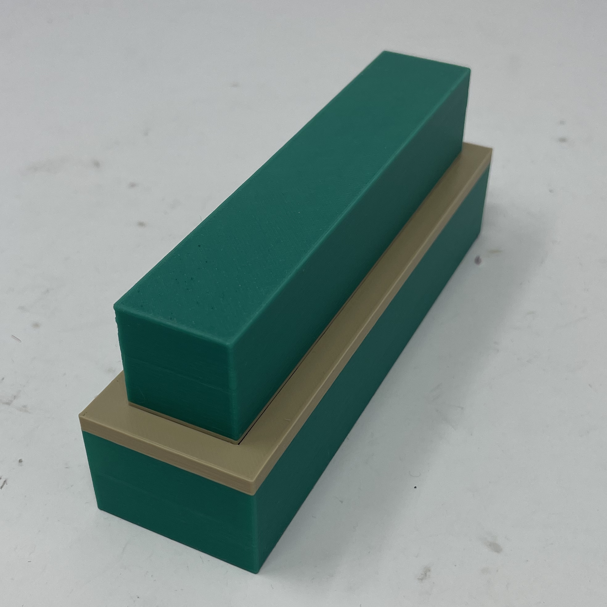

Week 5: 3D Printing
Outline:
A Ring and a Smol Cup
For my first basic prints, I decided to print a ring and a small cup. Both were extremely simple to design, and the prints were also quite fast. Pictures of the designs are below, as well as the print for the cup. The ring took around 2 minutes to print, while the cup took around 30 minutes.


Designs for a ring and a small cup.
Small cup.
3D Scanning
For the 3D scan I decided to scan my girlfriend's head. It was hard, and we had to try it 3 times before we found a way that yielded a succesful result. The hardest part was the hair, which is long(ish) and curly and dark, and this was the hardest part for the scanner. It was also difficult to deal with the dimensions, since we couldn't keep the camera too close or it wouldn't see everything, but we also couldn't keep it too far away because it wouldn't capture everything in view.
Scan of head in Prusa Slicer.
There were a lot of holes in the initial rendering, especially in the hair area, but we filled most of these and smoothed the face and it ended up looking fairly decent, though not perfect. One thing that frustrated me was the neck, because there was no simple way of just making it flatter and rounder, even though that was one part which I did not care about at all and should have been quite simple. I ended up simply moving the whole head downward in the Prusa Slicer in order to remove parts od the model that were strange, and thus create a kind of rounder and more natural base for the head.
Interestingly, while the whole print was going to take around 5 hours, almost half of this time was for the support alone. Clearly, though, the support seems necessary for a print like this one.
Sliced head with support in Prusa Slicer.
I started the print late Wednesday, so I wasn't able to see the finished print, but here are some pictures of how the bottom layers looked (much of it being support).


Bottom layers of head.
3D Printing: a Key
For my more serious print, I decided to start working on the MVP for my final project. Since I want to build a small, flexible piano keyboard, I am thinking that my MVP could just be a collection of many individual keys each of which plays a different note. And this week, I decided to start designing what one of those individual keys could look like.

Design for a single piano keyboard key.
I decided to make two designs: one for a piano key, and another representing its inverse to serve as a potential mold. Since I they keyboard to be flexible, I want to make the keys with silicone. This is also convenient because it makes the mechanism for pressing keys quite straightforward: I don't need any mechanics, because the material itself would allow me to press and deform it while retaining its intrinsic shape. To make the key, I research what the usual dimensions of a piano key are at this website. I made some decisions about the interior based on my intuition for how I want the silicone version to work. This 3D printed key won't work at all because it will be solid, but I just wanted to see it printed to get a sense about whether my current design would look as I want it to.

Design for a mold for a piano key.
I designed the mold after the key, and I just tried to reverse engineer my design for the key in order to determine how to design the inverse. I got it eventually, but I got the feeling that there may be a simpler version to do this in Fusion that I am just not yet aware of.
Print of piano key.
The prints took around 5 hours to finish. When I first returned to get them, I realized that there hadn't been enough filament for the print to continue and so the job had been stopped. Fortunately changing the filament was extremely easy and straightforward. It also ended up being better, because I was able to get a print with two colors, and I am much happier with this color design than I would have been if it had been monochromatic.

Print of key mold, and comparison with key.
I am extremely happy with how the prints ended up. I aligned the key and the mold and it looks like they are near perfect inversions of each other. Unfortunately the key did not fit so easily inside the mold, and I did not want to push it too much in order to protect the integrity of the mold. But I think this is to be expected because I made the sizes identical, and so left no tolerance.
The mold and the key are an almost perfect inverse of each other.
After doing the 3D print of my model, I think I want to play around with some of the dimensions I had used for my key, but those will be fairly straightforward. After that I hope to pour silicone in my model and see if I can get an actual key out of it.